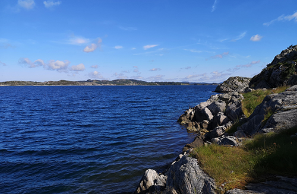
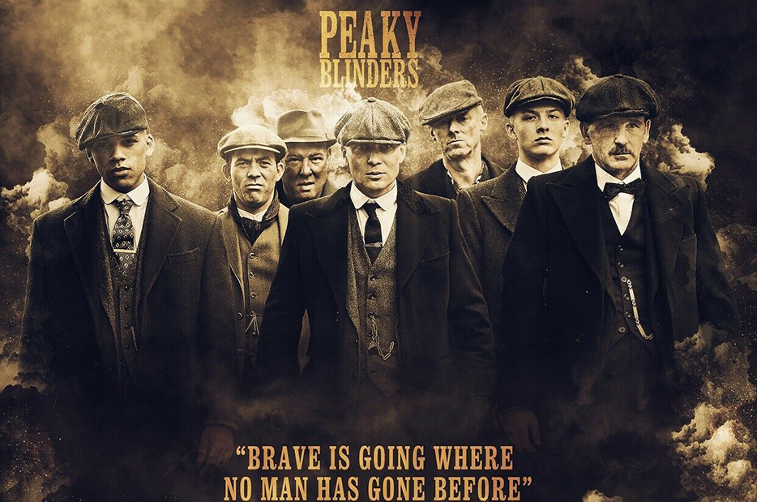

Litt om meg
____________________________________
Hei, jeg heter Balkis. Jeg er en 17 år gammel jente som bor hos foreldrene sine og går studiespesialisering på Vardafjell. Jeg har en eldre bror (22 år), som for tiden studerer dataingeniør i Bergen og en lillesøster (2 år). Selv har jeg ikke bestemt hvilke by jeg skal studere i og jeg har ikke noe spesifikke studier, men jeg tenker noe slags ingeniør studie. Jeg liker natur og dyr, men jeg tilbrakte mesteparten av tiden hjemme.

Bøker
____________________________________
På fritiden liker jeg å lese, for det meste klassisk litteratur, spesielt russisk litarutre. Favorittforfatter min er, Fjodor Dostojevskij, og favorittboken min er"Brødrene Karamasov"."Brødrene Karamazov" er et mordmysterium, et rettssalsdrama og en utforskning av rivalisering i en serie trekantede kjærlighetsforhold som involverer Fjodor Pavlovich Karamazov og hans tre sønner – Dmitri, Ivan og Alyosha. Bortsett fra klassisk litteratur liker jeg også å lese historie og politikk, spesielt om det siste århundrene.
Filmer/TV serier
____________________________________
Bortsett fra å lese, liker jeg også å se TV -serier og filmer og noen animerte serier. Noen av favoritt TV-seriene mine er Peaky Blinders, The Wire og True Detecive, og favorittfilmen min er Shutter Island. Min favorittfilmregissør er martin scorseseMartin Scorsese Martin Scorsese er en amerikansk filmregissør, produsent, manusforfatter og skuespiller. Han er kjent for sin grove, omhyggelige filmstil og regnes som en av de viktigste regissørene gjennom tidene.
